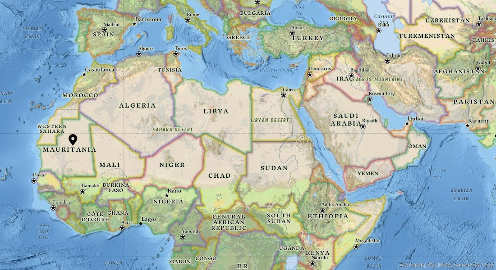

Works

Selected Works
Analyzing the Image of China through the Egyptian Movie "The Great Beans of China" (CN)
查看Introduction of Andalusian Literature (AR)
查看The Role of Economic Factors in the Evolution of the Political Situation in the Western Sahara (CN)
查看The Reasons for the Failure of Nasserism (CN)
查看 (DOCX)A Brief Introduction of Sundan's Oct.25 Coup (EN)
查看Public Opinion Dynamics in Morocco in the Context of COVID-19 – A Study Based on the Results of Arab Barometer’s Sixth MENA Public Opinion Survey (CN)
查看Public Opinion Dynamics in Tunisia in the Context of COVID-19 – A Study Based on the Results of Arab Barometer’s Sixth MENA Public Opinion Survey (CN)
查看Middle Eastern Studies Community Weekly Newsletter Series, Sample: Bloody clashes erupt between Sudan and Ethiopia in disputed area, 5th Bulletin
查看Other Publications
Essays, translations and other kinds of works that were published, mostly on newspapers.
Self-care, self-reliance, and self development
Dahe Daily (state-level newspaper of Henan province), Nov.9, 2015.
查看In memory of that jujube tree
Dahe Daily, Oct.26, 2015
查看Applaud for every day
Dahe Daily, Oct.19, 2015
查看Lead life with a grateful heart
Dahe Daily, Nov.30, 2015
查看The old persimmon tree in my hometown in the country
Henan Daily, Oct.14, 2015
查看Lessons from the boiling frog experiment
Entrepreneurs Daily, Aug.27, 2015
查看In company with books, growing from reading
Xinyang Daily (Xinyang is my hometown city), Jul.15, 2015
Request for further readingThe clear and hazy memories (translation of Syrian poet Adunis' poem)
Henan Report Today, Oct.8, 2021
查看As free as a summer breeze (translation of Tunisian poet Echebbi's poem)
Henan Report Today, Oct.8, 2021
查看لمحة عامة عن المخطوطات العربية --- الجزء الخامس من ملاحظات قراءة الكتب العربية القديمة
Co-translation of Prof. Ge Tie Ying's Chinese work "An Overview of the Arabic Manuscripts --- The Fifth Part of the Notes for Reading Arab Classic Books", expected soon.
查看 (DOCX)Weekly Middle Eastern Newsletter (02): USA, Israel, UAE and Bahrein Launched Joint Military Drill in the Red Sea
Nov. 2021, Middle Eastern Studies Community (China) online platform.
查看